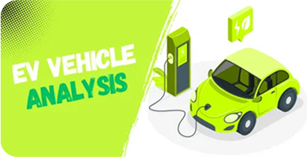

My Projects


EV Vehicle Analysis
Domain/Function: Environmental Data Science | Geospatial
Analytics
Career Aspirations project - Analysis
Domain/Function: Career Aspirations & Influences


Ecommerce Sales Analysis
Domain/Function: Sales Analysis